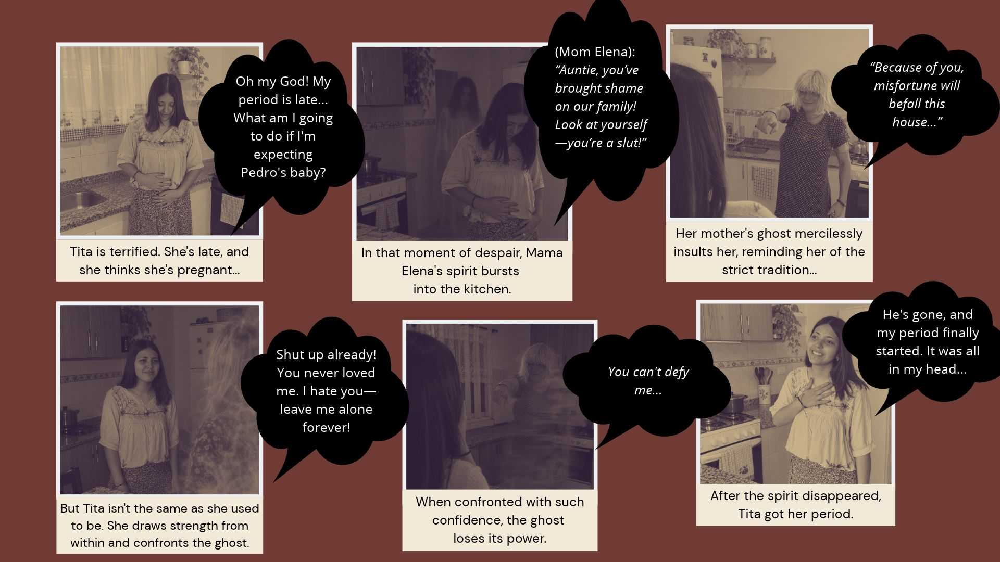

Fotonovela del Capítulo 9

Mientras Tita prepara chocolate y rosca de reyes, la culpa y el temor a estar embarazada de Pedro la atormentan, llevándola a enfrentarse con el fantasma de Mamá Elena. En medio de la tormenta emocional, el inesperado regreso de Gertrudis como generala revolucionaria trae alegría al rancho y revela secretos familiares del pasado.